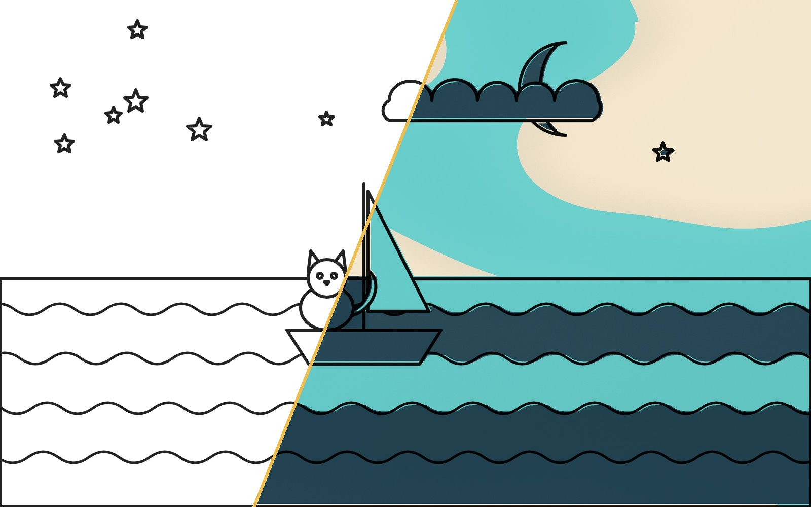

Pick a picture
Each time you open Fude, choose what the cat paints: The Starry Night, The Great Wave, or an abstract canvas. Then choose its colors.

Fude listens to the music in your browser tab and paints it, note by note, in Chrome’s side panel. A little cat does the brushwork.
FreeNo accountNothing recordedChrome and Edge
It hears the music in your tab. It finds every note as it sounds. It gives each one a color, and paints.
Twelve notes, twelve colors
This is how Fude hears. Play the keys (or A to J on your keyboard), drag across the canvas, or sing to it. Every note uncovers The Starry Night in its own color. Can you finish it?
Now imagine it with your favorite song. Fude listens to any tab and paints the whole thing, with a cat doing the brushwork.
In the side panel
Each time you open Fude, choose what the cat paints: The Starry Night, The Great Wave, or an abstract canvas. Then choose its colors.
It works from the bottom up while the song plays. Watch the key it hears, the notes as they arrive, and the lyrics scrolling in time.
The painting stays hidden until the song ends. When the music stops, the cat stops and looks up at you, then the finished picture appears in its frame.
The more you listen and paint, the more you unlock: new pets, note sparks, a gold frame. Every painting is kept in your gallery with its song.

Upload a pencil drawing, or describe a scene and Fude sketches it for you. Then the music colors it in, shape by shape, like a coloring book.
That was one song. Fude paints every song you play, on Spotify, YouTube and anywhere else.
Add to ChromeFreeFrom the gallery
 AfterBefore
AfterBefore
 AfterBefore
AfterBeforeVersion 1.2 for Chrome and Edge. Clicking downloads Fude and shows the three quick steps to switch it on. One-click install is coming with the Chrome Web Store listing.
Fude turns the sound into notes on your computer. Nothing it hears is recorded, saved or sent anywhere, and it only listens to a tab after you click its button there.
There are no accounts, ads or tracking. To show lyrics, Fude asks the open library LRCLIB for a song’s words using its title and artist, and you can turn that off. Read the privacy policy.
On this page, Sing to it hears your voice inside your browser only, to pick out the notes. Nothing is recorded or sent, and the microphone switches off when you stop.
FudePaints the music in your tab
Add to ChromeFree